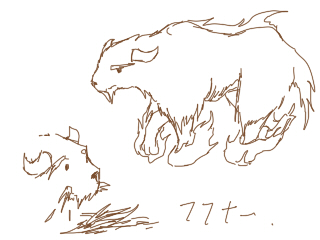
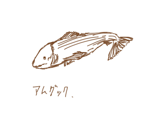
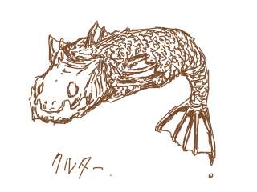

哺乳類
フフナー
 足に火を纏った牛。 濃いクリーム色の毛はあらゆる炎を跳ね返す。 どんなに足場の悪い場所でも構わず走ることが出来る。 また、とても力が強くいくらでも荷物を持って走ることが可能である。
クヌー
曲がった角が特徴の鹿のような動物。 柔らかい肉と、栗色の毛皮が特徴。 騎乗用には向かない。鳥類
クールックフィンクス
通称「屍喰鳥」と呼ばれる。 毛は全て黒いが、尾羽根に真紅の美しい羽根が２本だけある。 雄はその羽根の長さ、色の鮮やかさで雌を誘う。 名前の由来は鳴き声、そしてその食生にある。 腐敗した肉しか食べず、新鮮な肉には見向きもしないのだ。 骨や筋のように堅いものが食べれないため、腐って溶けた状態がもっとも食べやすいようだ。 故に戦場にはいつも彼等はおり、人が死に、腐敗するのを待っている。 近くにこの鳥がいたらまずそこに何らかの腐乱死体があると考えて良い。 ちなみに世界中に生息しており、凶兆の前触れとされている。朱燃鶏
鶏と言うが、とても美しく滅多に見られないのでその羽根はそれだけでとても価値のあるものとされ、金よりも貴重である。 エレメンタルを喰らい、溶岩の上を歩く。炎との親和性がとても高く、 炎にあぶられても焼けないのは炎のエレメンタルのみを食べ生きているからだと思われる。 羽根は赤く輝いており、その尾羽根は常に炎を纏う。近くに炎のエレメンタルが少しでもあるかぎり、燃え続ける。 この鶏の羽根を使って装飾された火食い布の衣はどんな大富豪も欲しがる垂涎の逸品で、300年に1度出回ったらすごいな、というレベルである。 とにかく珍しい上、仕留めるのも溶岩の中に逃げられてしまえば手の出しようが無く捕まえるのはとても難しいだろう。 生き物よりは精霊に近い存在だが、鶏の形をしているのでここに記す。爬虫類・両生類
火蜥蜴
脂をよく含んでおり、自分の体の脂で火を吹くことができる。 焼く時は焦げるほどしっかり焼かないと、ギトギトで食えたもんじゃない。 また炎のエレメントを好んで食べ、敵が現れたらそれと脂を吐き出す。 そうすると大爆発が起き、敵は脂で火傷する上に爆音で大慌てで逃げるという寸法である。 そのため一撃で仕留めないとただでは済まないため、地雷蜥蜴とも呼ばれ火山帯では最も恐れるべき生き物の1匹である。 火食い布を纏っていなければ直接戦闘は避けたい相手だ。 しかしその爪は薬にもなり、良質な脂なため焼いて垂れた脂は集めると高く売れる。 ちなみに火蜥蜴の舌という名のトウガラシもあるが、この爆発的な炎の威力やその形状から由来している。 食生は石ヤドカリ、雑多な虫、エレメント、泥(ミネラル豊富)などである。飛び蛙
とても高く飛び、とても長寿で1000年以上生きるものも。 しかし天敵が多いため、寿命ではなくほとんどが天敵に食われて死ぬ。 大量に生まれるので、春は空を飛ぶ虫を食うために多くが飛び、水が反射してきらりと光り、美しい。 大飛び蛙は沼の主のようになり、守り神として崇められることも。魚類
アムグック
 水の綺麗なところに住む、白身のお魚。 甘みがある肉なだけに、塩焼きや蒸し焼きが美味しい。 アムグックの澄む水の綺麗な渓流にはラムニが自生しており、 それを巻いて蒸し焼きにするとなお美味しい。
クルター
 外見はとてもイカつくて、あまり食べたいとは思わないが 中の肉は白く、脂がのっていてとても美味しい。 だがクルターは火をとおすと肉の成分が猛毒に変わり、 食べたものは死んでしまう。 よって古代語で「美味な毒」という意味もある。 森の中のにごった水の中で獲物を探すため目は大きく、 茶色の斑点はさらに大きな外敵に捕食されるのを防ぐ効果がある。